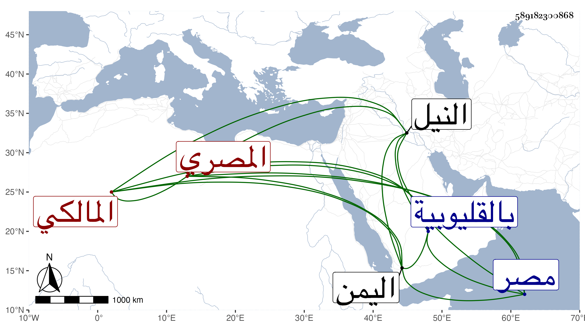

0902Sakhawi.DawLamic.ITO20230111-ara1.EIS1600.589182300868
Biography ID: 589182300868
214
عبد الرحمن بن حسن بن سويد وجيه الدين بن البدر المصري المالكي الماضي أبوه والآتي ابنه فتح الدين محمد ويعرف بابن سويد . ذكره شيخنا في إنبائه فقال : أحد النواب كان حسن الصورة فاشتغل قليلا وزوجه أبوه وهو صغير بابنة الفخر القاياتي يعني فاطمة وتزوج هو بأختها انما هي ابنة أختها أم هاني ابنة الهوريني بعد فراقه لتلك فلما مات أبوهما يعني الفخر احتاط الأب على تركته بطريق الايصاء والتحدث فخلصت لهم الدار العظمى بشاطئ النيل ، ودخل مع والده وهو صغير اليمن سنة ثمانمائة وكذا سافر معه إلى غيره من الأماكن وقربه أكثر من أخيه محمد يعني الآتي مع كون ذاك أكبر وصار هذا أنبه لكن مع بأو زائد فيهما ليس له سبب الادناءة أصل جدهما سويد فقد كان الشيخ شمس الدين المراغي يقول انه رآه وهو بالعمامة الزرقاء يبيع الفراريج والقفص على رأسه فالله أعلم . ونشأ ابنه البدر في غاية الاتضاع لكنه حصل له مال طائل فصار إلى ولديه فعظمت أنفسهما وانتسبا إلى كنانة فقال لي بعض المصريين لعل أصلهما من منية كنانة بالقليوبية فان أكثر أهلها نصارى وكأنه اعتمد المقالة المذكورة ، ورأس وجيه الدين بعد أبيه وصار المشار إليه بمصر وتزوج عزيزة ابنة القاضي جلال الدين البلقيني فولدت له الصدر محمد وعائشة ولازم يشبك الأعرج أتابك الدولة الأشرفية برسباي فكان يتقوى به في أموره ثم لازم جوهر الخازندار الأشرفي فعظم أمره وتقوى به في أمور كثيرة . قلت وقد رأيت ابن أبي اليمن عرض عليه . مات في ليلة سادس شعبان سنة أربع وأربعين وكان ابتداء ضعفه في ربيع الأول فانتقل من مرض إلى مرض إلى أن غلب عليه الزحير ثم حبس الاراقة فلما قوي البرد اشتد به وانحلت قواه وصلى عليه بجامع عمرو وتقدم المالكي للصلاة عليه ، ودفن بمدرستهم ، وفي الحال ختم على حواصله ببيته وغيره من جهة السلطان لمرافعة بعض أتباع الخازندار فيه على ما قيل ولم يلبث أن فك ولده الختم في صبيحة ذلك اليوم .
